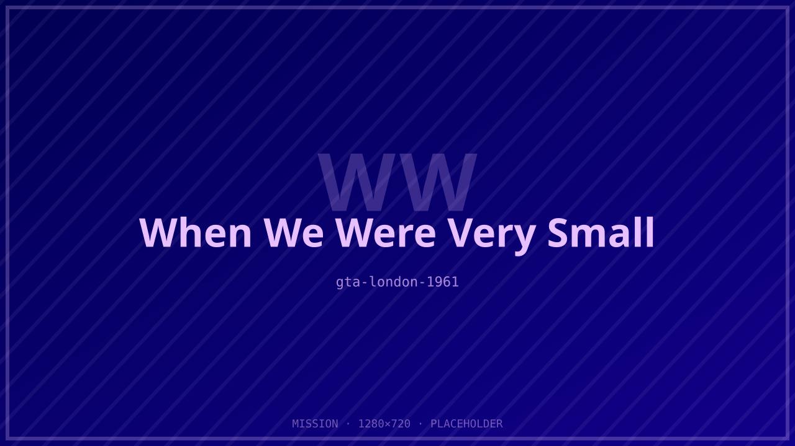
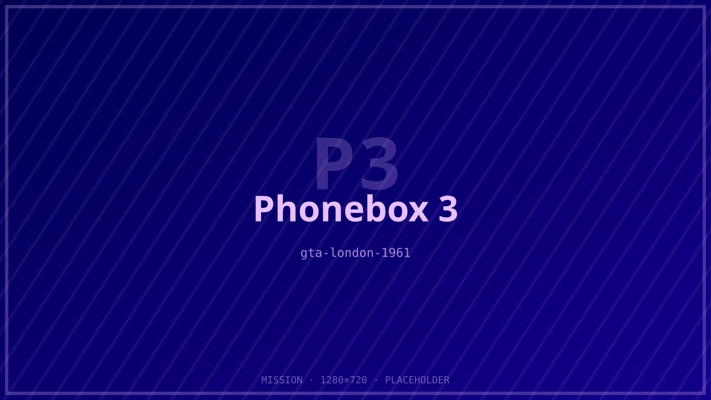
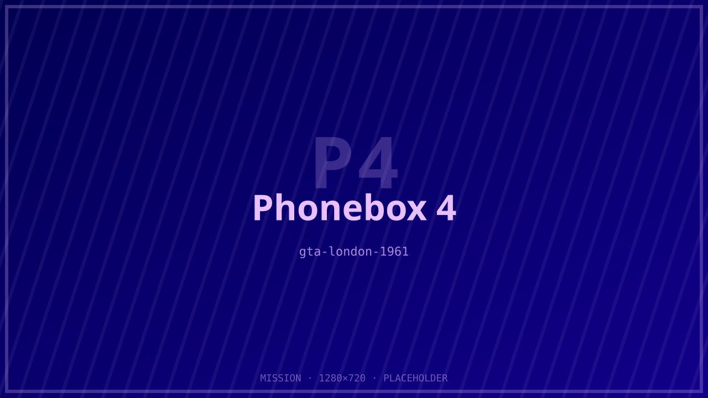
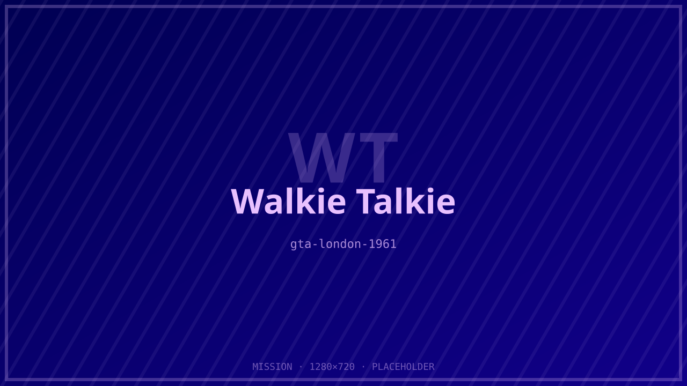
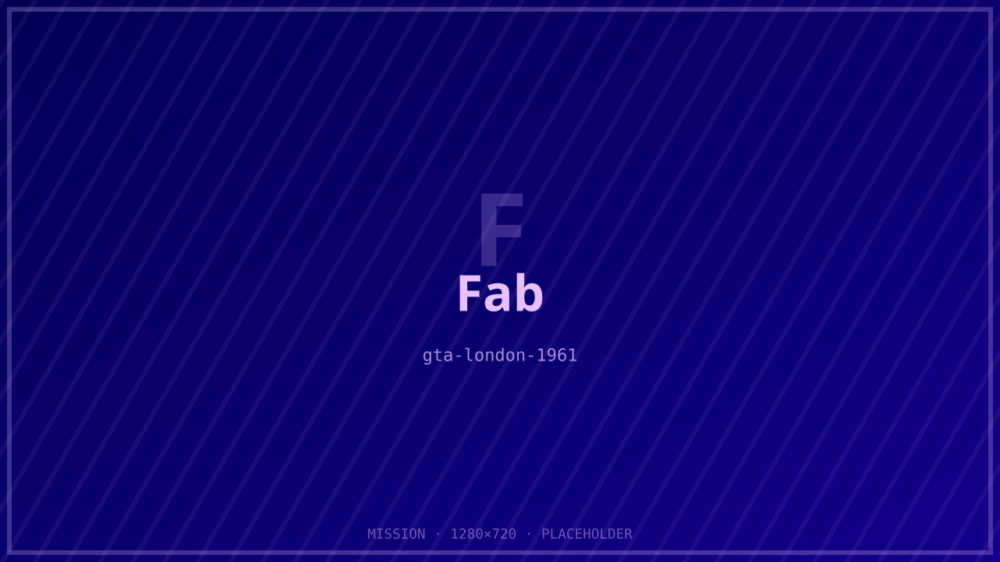
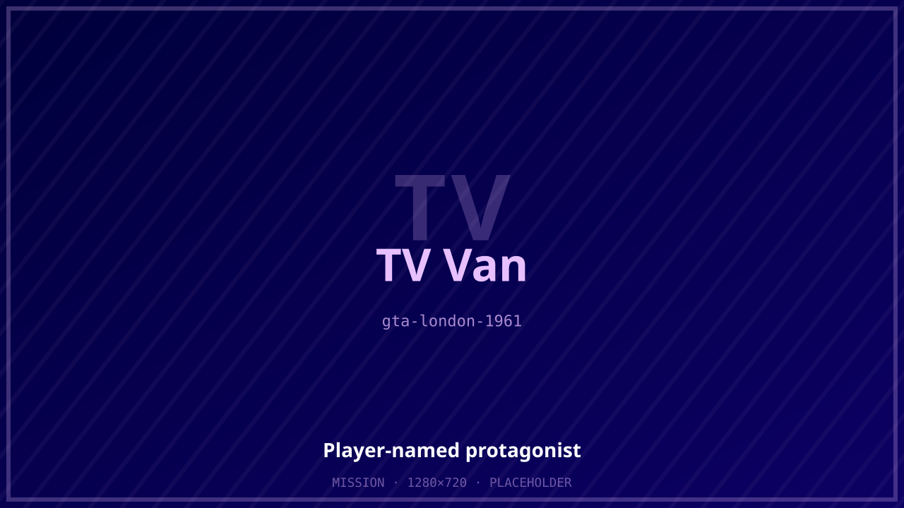

London 1961 · 9 records · coverage: complete
Missions — Grand Theft Auto: London 1961
Story and side missions in order, with giver, location and reward.
Download missions.json Whole game bundle
| Image | # | Mission | Type | Giver | Location | Reward |
|---|---|---|---|---|---|---|
 | 1 | When We Were Very Small | Story | Unspecified | Chapter 1 - When We Were Very Small | — |
 | 2 | Phonebox 1 | Story | Unspecified | Chapter 1 - When We Were Very Small | — |
 | 3 | Phonebox 2 | Story | Unspecified | Chapter 1 - When We Were Very Small | — |
 | 4 | Phonebox 3 | Story | Unspecified | Chapter 1 - When We Were Very Small | — |
 | 5 | Phonebox 4 | Story | Unspecified | Chapter 1 - When We Were Very Small | — |
 | 6 | Walkie Talkie | Story | Unspecified | Chapter 1 - When We Were Very Small | — |
 | 7 | Fab | Story | Unspecified | Chapter 1 - When We Were Very Small | — |
 | 8 | TV Van | Story | Unspecified | Chapter 1 - When We Were Very Small | — |
 | 9 | Ending | Story | Unspecified | Chapter 1 - When We Were Very Small | — |
Field definitions
| Field | Type | Required | Notes |
|---|---|---|---|
order | integer | yes | |
name | string | yes | |
type | string | yes | one of: Story, Side, Asset, Heist, Contact, Strangers & Freaks, Business, Vehicle, Random Event |
giver | string | yes | |
location | string | yes | |
reward | object | yes | |
summary | string | yes | |
requirements | array | no | array of strings |
playable | string | no | |
image | string | null | no | |
verified | boolean | yes | |
source | string | no |